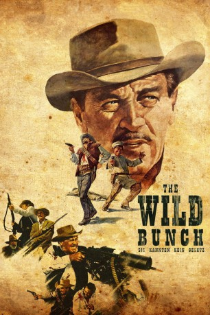

#1982 The Wild Bunch - Sie kannten kein Gesetz
Alternativ: The Wild Bunch
Auszeichnungen: für 2 Oscars nominiert
 
 IMDB-Wertung: 8.0 / 10
IMDB-Wertung: 8.0 / 10  Metascore: 0
Metascore: 0 
Texas im Jahre 1914: Pike Bishop und sein aus ehemaligen Soldaten rekrutierter Banditentrupp befinden sich auf der Flucht vor Bishops altem Kumpel Thornton und seinen Gesetzesmännern. Als die Bishop-Bande vor den Häschern nach Mexiko ausweicht, macht man die Bekanntschaft des Revolutionsführers Mapache, der Bishop einen lukrativen Deal vorschlägt: Die Outlaws sollen gegen reichen Lohn einen schwerbewachten Waffentransport überfallen. Doch Mapache treibt ein doppeltes Spiel und denkt nicht ans Bezahlen.
Jahr: 1969
Dauer: 145 Minuten
FSK: 16
Land: USA Studio: Warner Brothers/Seven ArtsTonspuren: DD1.0 - ,
Untertitel:
Auflösung: 1080p (1920x816) Größe: 11776 MB
Genre: Action, Abenteuer, Western
Regisseur: Sam Peckinpah
Drehbuch: Walon Green, Sam Peckinpah, Walon Green, Roy N. Sickner
Soundtrack: Jerry Fielding
Darsteller:
 William Holden als Pike Bishop
William Holden als Pike Bishop Ernest Borgnine als Dutch Engstrom
Ernest Borgnine als Dutch Engstrom Robert Ryan als Deke Thornton
Robert Ryan als Deke Thornton Edmond O'Brien als Freddie Sykes
Edmond O'Brien als Freddie Sykes Warren Oates als Lyle Gorch
Warren Oates als Lyle Gorch Ben Johnson als Tector Gorch
Ben Johnson als Tector Gorch Emilio Fernández als Mapache
Emilio Fernández als Mapache Strother Martin als Coffer
Strother Martin als Coffer L.Q. Jones als T.C
L.Q. Jones als T.C- Albert Dekker als Harrigan
 Bo Hopkins als Crazy Lee
Bo Hopkins als Crazy Lee Dub Taylor als Wainscoat
Dub Taylor als Wainscoat Alfonso Arau als Herrera
Alfonso Arau als Herrera Bill Hart als Jess
Bill Hart als Jess- Chalo González als Gonzalez
 Robert 'Buzz' Henry als Bounty Hunter , uncredited
Robert 'Buzz' Henry als Bounty Hunter , uncredited Buck Holland als Thornton Posse Rider , uncredited
Buck Holland als Thornton Posse Rider , uncredited- Jaime Sánchez als Angel
- Paul Harper als Ross
 Jorge Russek als Zamorra
Jorge Russek als Zamorra- Chano Urueta als Don Jose
- Elsa Cárdenas als Elsa
- Rayford Barnes als Buck
- Stephen Ferry als McHale
- Sonia Amelio als Teresa
- Aurora Clavel als Aurora
 Enrique Lucero als Ignacio
Enrique Lucero als Ignacio- Elizabeth Dupeyrón als Rocio
- Yolanda Ponce als Yolis
- José Chávez als Juan Jose
- René Dupeyrón als Juan
- Pedro Galván als Benson
- Graciela Doring als Emma
- Major Perez als Perez
- Fernando Wagner als Mohr
- Jorge Rado als Ernst
- Ivan Scott als Paymaster
- Señora Madero als Margaret
- Margarito Luna als Luna
- Lilia Castillo als Lilia
- Elizabeth Unda als Carmen
- Julio Corona als Julio
- Archie Butler als Jabalai , uncredited
- Tap Canutt als Burt , uncredited
- Gordon T. Dawson als Pinkerton Man , uncredited
- Mickey Gilbert als Frank , uncredited
- 'Chico' Hernandez als Boy on Town , uncredited
- Walt La Rue als Abe , uncredited
- Erwin Neal als Fray , uncredited
- Matthew Peckinpah als Boy Watching Robber Scoop Up Moneybag , uncredited
Datei: X:\HD-Western-1960-1979\Wild Bunch - Sie kannten kein Gesetz, The (1969, FSK16, 1920x816).mkv seit 15.09.2015
Festplatte: HD Eastern+Western
 Es gibt insgesamt 110 Filme in der Gruppe 'HD-Western-1960-1979'
Es gibt insgesamt 110 Filme in der Gruppe 'HD-Western-1960-1979'